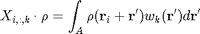
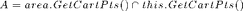
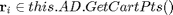
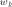
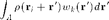

Contents
function AD = ComputeConvolutionFiniteSupport(this,area,weights,pts)
This function computes the convolution between a function defined on a HalfSpace with a set of functions with of finite support, at a specific set of points
Input
- area - structure with two methods (1) [int,A] = ComputeIntegrationVector() and (2) pts = GetCartPts(), with pts = struct(y1_kv,y2_kv)
- weights - a cell with a list of functions which get a structure with two arrays [y1_kv,y2_kv] as input and returns one array of same size. [y1_kv,y2_kv] represents a point in polar coordinates, representing the radial and angular component, respectively.
- pts - structure with 'y1_kv','y2_kv','y1','y2'. (y1_kv,y2_kv) represents a point in the skewed coordinate system, and is a grid defined through [y1 (X) y2]
Output
Average densities to get average densities

where , and .  is the k-th element in the weight-function list weights.
Note: This method is only tested if pts are in a shape of a HalfSpace.
Initialization
For the input points given through pts, we distinguish two sets:
- points r in pts, for which r+rd with rd in area.GetCartPts() are always within the area defined through this class, so the area does not have to be split. These are collected in ptsHS.
- points r in pts, for which r+rd with rd in area.GetCartPts() are not always a subset of this class. These are collected in ptsStrip.
fprintf('Computing interpolation for matrices for averaged densities..\n'); tic AD = zeros(length(pts.y1_kv),this.M,numel(weights)+1);%always include unity weight areaPtsCart = area.GetCartPts(); y2Sep = this.y2wall + this.R/sin(this.alpha) + ... + abs(min(areaPtsCart.y2_kv))/sin(this.alpha); % Note: division through sin(this.alpha) takes into account that % pts.y1_kv and pts.y2_kv are the coordinates in the skewed % grid. markY2 = (pts.y2 < y2Sep); markYkv = (pts.y2_kv < y2Sep); ptsStrip.y1_kv = pts.y1_kv(markYkv); ptsStrip.y2_kv = pts.y2_kv(markYkv); ptsStrip.y2 = pts.y2(markY2); ptsStrip.y1 = pts.y1; ptsHS.y1_kv = pts.y1_kv(~markYkv); ptsHS.y2_kv = pts.y2_kv(~markYkv); ptsHS.y2 = pts.y2(~markY2); ptsHS.y1 = pts.y1;
Computation of Intersections

The intersection between {area+r} with r in ptsStrip and the HalfSpace (the this class) are computed. An intersection for {area+r_i} and {area+r_j} is equivalent up to translation, if the y-coordinates of r_i and r_j are the same. We make use of this property, for performance purposes, as the points in ptsStrip are aligned with a grid.
ptsStripCart = GetCartPts(this,0,ptsStrip.y2);
ptsy2 = ptsStripCart.y2_kv;
for iPts = 1:length(ptsy2)
dataAD(iPts) = Intersect(this,area,struct('offset_y2',ptsy2(iPts)));
end
Computation of convolution matrices
For the point in the set ptsHS, the integration matrix (over area) is the same for each point. To see this, consider that in

for r in ptsHSthe area A is independent of r_i.
AD(markYkv,:,:) = Conv_LinearGridX(this,ptsStrip,dataAD,weights);
AD(~markYkv,:,:) = Conv_LinearGridXY(this,ptsHS,area,weights);
t = toc;
disp([num2str(t),'s']);
end
The specified superclass 'HalfSpaceSkewed' contains a parse error or cannot be found on MATLAB's search path, possibly shadowed by another file with the same name.